PROJMAN Project Proposal · Section I302
Development of a Web-Based Multi-Branch Store Management Information System for IGLÚ
for Sales and Employee Monitoring in Barangay Salapungan, Angeles City
PROJECT PROPOSAL DEFENSE · Use ← → to navigate
Background of the Project
Multi-Branch Business Operations
- Businesses require organized operational information.
- Accurate records support effective business monitoring.
- Multiple branches increase management complexity.
Existing Operational Challenges
- Separate records cause information inconsistencies.
- Manual processes delay information updates.
- Disconnected files limit data accessibility.
- Unauthorized modifications threaten record reliability.
Business Context: IGLÚ
- Self-service frozen yogurt and ice cream.
- Manages employees, attendance, and sales.
- Requires consistent multi-branch operational monitoring.
Proposed Solution: IgluHub
- Web-based Multi-Branch Store Management Information System.
- Centralizes employee, attendance, and cashier records.
- Supports authorized monitoring across store branches.
- Designed for Barangay Salapungan, Angeles City.
Statement of the Problem
General Problem — Separate operational records create difficulties in managing employees, attendance, cashier transactions, and branch operations. These practices may cause delays, inconsistencies, and security risks.
Employee Records Management
Inefficient organization and accessibility across branches.
Attendance Monitoring
Inconsistent recording and monitoring of attendance.
Cashier Operations Monitoring
Difficulties managing cashier records and sales transactions.
Branch Monitoring
Limited centralized access to branch information.
Data Consistency
Inconsistent records and delayed information updates.
Data Security
Risk of unauthorized sales and attendance modifications.
Project Objectives
General Objective — To develop IgluHub, a centralized and secure multi-branch management system for employee, attendance, and cashier operations.
Employee Records Management
Enable authorized personnel to manage employee information.
Attendance Management
Record time-in, time-out, absences, and tardiness.
Cashier Management
Organize and monitor cashier transactions and sales records.
Centralized Branch Monitoring
Provide centralized access to multi-branch operational information.
Data Management & Validation
Minimize duplicated, inconsistent, delayed, and missing records.
Access Control & Accountability
Restrict unauthorized changes and track user activities.
Target Users or Beneficiaries
Branch Owners
Monitor operations and business performance.
Head Office Management
Consolidate and review branch information.
Branch Employees
Access organized attendance and employee records.
Customers
Benefit from streamlined cashier transactions.
Organizational & Industry
- Business Operations Management
- Expanding Business Owners
- Small and Medium Retail Businesses
Academic & Professional
- Information Systems Practitioners
- Academic Institutions and Instructors
- Future Researchers
Scope and Limitations
Part 1 of 2 — ScopeEmployee Management
Manage employee records and branch assignments.
Attendance Monitoring
Record time-in, time-out, absences, and tardiness.
Cashier Operations
Record sales, items, quantities, prices, and payments.
Transaction Management
Require manager authorization for edits and voids.
Branch Management
Manage branch information and employee assignments.
Dashboard and Reports
Summarize sales, attendance, and transactions.
Security and Accountability
Implement access controls and audit logs.
Scope and Limitations
Part 2 of 2 — LimitationsInternet Dependency
Requires internet for normal access and synchronization.
Data Accuracy
Depends on correct data entry and verified business information.
Payment Processing
No direct bank or e-wallet payment integration.
Excluded Functions
No payroll, purchasing, suppliers, or accounting.
Security Constraints
Cannot guarantee complete prevention of unauthorized activity or data loss.
Technical Dependencies
Performance depends on hosting, devices, and connectivity.
Testing Coverage
Limited to approved branches, users, devices, and testing period.
Expected Project Output
Part 1 of 2 — Administrator, Management, System & Data FeaturesIgluHub — A responsive, web-based Multi-Branch Store Management Information System.
Administrator & Management
- Secure login and role-based access.
- Management dashboard and branch monitoring.
- Employee records and branch assignments.
- Attendance and sales monitoring.
- Reports, analytics, and audit log review.
System & Data
- Centralized database and data synchronization.
- Input validation and branch association.
- Permission enforcement and audit logging.
- Responsive desktop and mobile interface.
- Backup and recovery planning.
Expected Project Output
Part 2 of 2 — Employee and Cashier Features- Secure employee login and attendance recording.
- Multi-item cashier transaction entry.
- Product, weight, quantity, and price management.
- Automatic totals, discounts, and change calculation.
- Cash and GCash payment recording.
- Transaction verification and manager authorization.
- Attendance history and transaction corrections.
Project Team and Responsibilities
Five-member team collaborating on planning, analysis, documentation, and developmentCarl Asnef B. Soguilon
Project Manager & Systems Analyst
Leads coordination, requirements analysis, and deliverables.
Roanne E. Fajardo
Documentation & Schedule Coordinator
Manages documentation, revisions, and project schedules.
Austin Karl C. Garcia
Technical Planning & Risk Coordinator
Handles technical feasibility, risks, and budget estimates.
Kariel Justine C. Ignacio
Scope & Communication Coordinator
Manages project scope and adviser-client communication.
John Paul Recapor
System Output & PMIS Research Coordinator
Documents outputs and coordinates ClickUp-based task tracking.
Project Activities and Work Breakdown Structure
Click or tap the diagram to inspect, zoom, and pan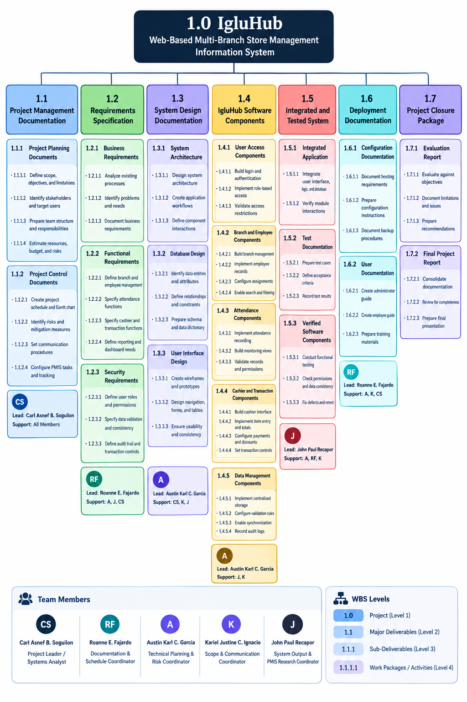
Click to zoomGantt Chart
Figure A of 2 — Proposal Documentation Schedule (ClickUp progress tracker) Click to zoom
Click to zoom
Gantt Chart
Figure B of 2 — Proposed System Implementation Schedule (WBS phases 1.1–1.7)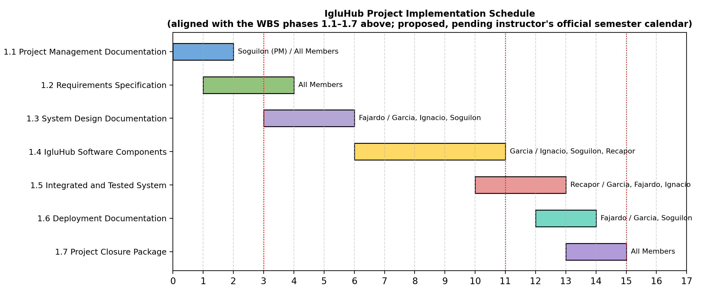
Click to zoomRequired Resources
Resources needed for planning, development, testing, and pilot implementationHuman Resources
Project manager, systems analyst, developers, database lead, documentation coordinator, testers, and IGLÚ representatives.
Hardware Resources
Existing laptops, desktop computers, and smartphones.
Software Resources
Visual Studio Code, web browsers, GitHub, ClickUp, and database tools.
Hosting & Database
Web hosting and centralized cloud database with access controls and backups.
Internet Resources
Existing internet access and mobile data for backup connectivity.
Testing Resources
Test accounts, sample records, products, prices, transactions, and compatible devices.
Preliminary Estimated Project Budget
All amounts are in Philippine pesos (PHP)| Item | Basis / Description | Cost |
|---|---|---|
| Internet & Mobile Data | Backup data and project connectivity | ₱300 |
| Cloud Hosting | Assumes adequate free tier | ₱0 |
| Cloud Database | Assumes adequate free tier | ₱0 |
| Domain Name | Optional domain for easier access | ₱800 |
| Development Software | Free tools and applications | ₱0 |
| Testing & Printing | Questionnaires and testing documents | ₱500 |
| Transportation | Client coordination and pilot testing | ₱1,000 |
| Miscellaneous | Communication and documentation supplies | ₱500 |
| Subtotal | ₱3,100 | |
| Contingency Fund (10%) | ₱310 | |
| Total Estimated Budget | ₱3,410 | |
Assumptions & Control
- Existing computers and smartphones will be used.
- No paid developer labor or recurring hosting/database charges.
- Free hosting and database services prioritized.
- Paid services require adviser/client approval.
- Expenses are recorded with receipts or proof of payment.
Possible Risks and Proposed Solutions
Part 1 of 21. Inaccurate or incomplete requirements
Consult IGLÚ representatives and validate employee, attendance, pricing, discount, and transaction rules.
2. Scope creep
Maintain the approved scope. Record additional requests as possible future enhancements.
3. Schedule delays
Use ClickUp to assign tasks, set deadlines, monitor progress, and hold regular meetings.
4. Technical difficulties
Plan early, develop core features first, test incrementally, and use GitHub for version control.
5. Internet connectivity issues
Use stable internet and mobile data as backup. Offline transaction processing is excluded.
6. Data entry errors
Apply input validation, confirmation screens, and authorized record reviews. Use test data during development.
7. Unauthorized access or modification
Implement secure login, role-based permissions, session controls, and audit logs.
Possible Risks and Proposed Solutions
Part 2 of 28. Data loss
Use GitHub, maintain document and database backups, and prepare a recovery procedure.
9. Limited budget or unexpected expenses
Prioritize free tools, record expenses, review purchases, and use the contingency fund only for documented needs.
10. Free hosting or database limitations
Evaluate service limits and backup options. Seek approval before using paid services.
11. Low user adoption
Provide a simple responsive interface, role-based accounts, orientation, and user feedback.
12. Device or browser compatibility
Test common desktop and mobile browsers and resolve major compatibility issues.
13. Delayed client feedback
Schedule consultations early, set feedback deadlines, prepare questions, and document decisions.
14. Insufficient testing
Test attendance, calculations, discounts, payments, permissions, transaction reviews, and audit logs before pilot implementation.
Communication Plan
| Activity | Roles & Responsibilities | Purpose | Methods |
|---|---|---|---|
| Team Meetings | Project Manager leads; researchers report progress and concerns. | Coordinate tasks, monitor progress, solve problems. | Face-to-face or group chat |
| Document Sharing | Documentation & Schedule Coordinator organizes; researchers share and review work. | Keep project documents organized and updated. | Google Drive / online documents |
| Adviser Consultation | Researchers present progress; adviser provides guidance. | Ensure compliance with research requirements. | Face-to-face or online meetings |
| Client Consultation | Researchers coordinate with IGLÚ representatives. | Understand operations and confirm requirements. | Interviews, meetings, calls |
| Testing & Feedback | Researchers test the system and gather feedback from selected IGLÚ users. | Identify errors and improve system functions. | Hands-on testing, feedback forms |
PMIS Tool to Be Used
Project Management Information System: ClickUpWhy ClickUp
- Task assignment, scheduling, progress monitoring, and collaboration in one workspace.
- Organizes project activities and responsibilities for the five-member team.
- Monitors deadlines, progress, documents, and updates.
- Prioritizes free features; paid features only if necessary and feasible.
Core Functions
- Task Assignment — Organizes WBS activities and deadlines.
- Scheduling — List, Board, Calendar, and Gantt views.
- Collaboration — Comments, file sharing, ClickUp Docs.
- Progress Monitoring — Tracks status and accountability.
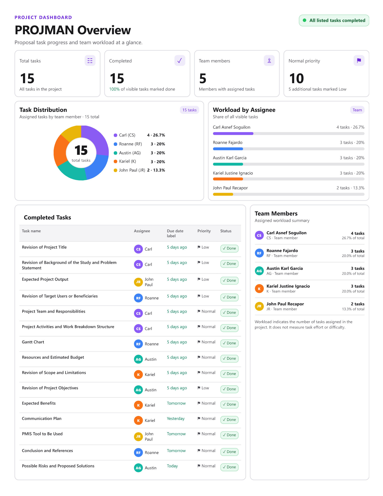
Click to zoomExpected Benefits
IGLÚ Branch Owners
Monitor sales, employee attendance, and branch operations through centralized records.
Employees
Manage attendance and access employee information. Cashiers record sales and process payments.
Customers
Experience smoother transactions through organized payment calculations and discount applications.
Researchers
Apply information systems knowledge and gain practical system development experience.
Future Researchers
Use the study as a reference for employee monitoring, attendance, sales, and multi-branch systems.
Conclusion
The proposed IgluHub system centralizes employee records, attendance, cashier transactions, and branch operations to improve information accessibility, accuracy, and consistency while reducing reliance on manual records.
Its centralized database, role-based access controls, audit logs, dashboards, and reporting features aim to improve operational efficiency, security, accountability, and coordination between branches.
Ultimately, the system seeks to provide a practical solution for IGLÚ's current operations and future development, depending on proper development, comprehensive testing, accurate data entry, reliable connectivity, appropriate security, and team–client cooperation.
References
- Aswintama, P., Haryanto, E., & Setyawan, R. A. (2025). Implementation of role-based access control, multi tenancy and audit logging in a single sign-on system. Jurnal Mandiri IT, 14(1), 119–128.
- Department of Trade and Industry. (2024, June 26). DTI pilots "Tindahan Mo, e-Level Up Mo!" to digitalize sari-sari stores in the Philippines.
- Mardhatillah, E., Erianda, A., & Hadi, R. (2026). Arsitektur sistem point of sale (POS) multi-cabang berbasis web untuk perusahaan ritel terdistribusi: Studi kasus pada Raffi Collection. JITSI: Jurnal Ilmiah Teknologi Sistem Informasi, 7(2), 160–166.
- Oikawa, K., Iwasaki, F., Sawada, Y., & Shinozaki, S. (2025). Unintended consequences of business digitalization among MSMEs during the COVID-19 pandemic: The case of the Philippines. Asian Development Bank Institute.
- Sagala, G. H., & Őri, D. (2024). Toward SMEs digital transformation success: A systematic literature review. Information Systems and e-Business Management, 22(4), 667–719.
IgluHub UI Mockups
Click any screen to inspect, zoom, and pan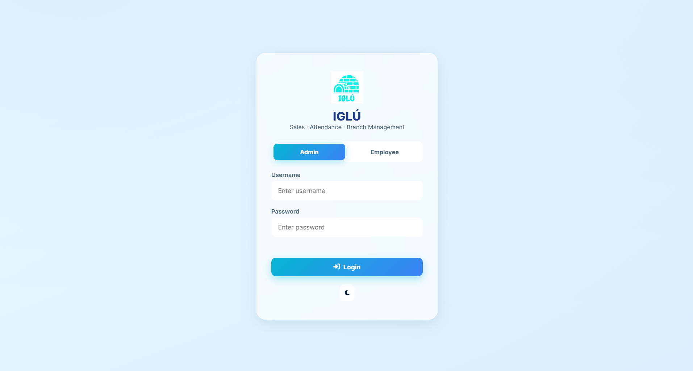
Login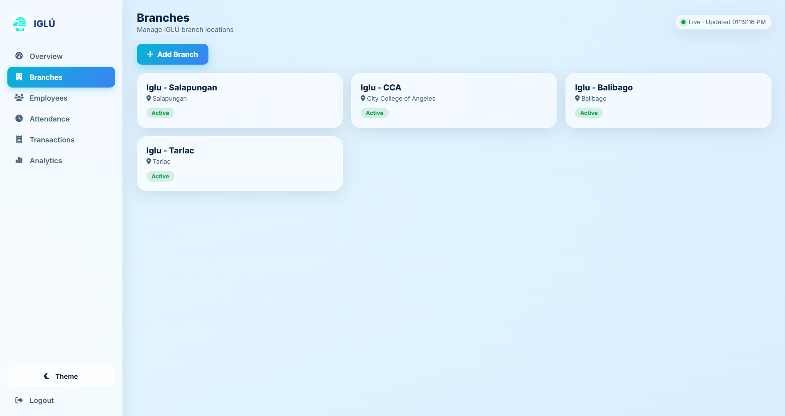
Branches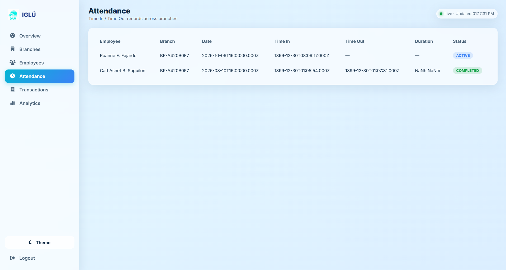
Attendance (Admin)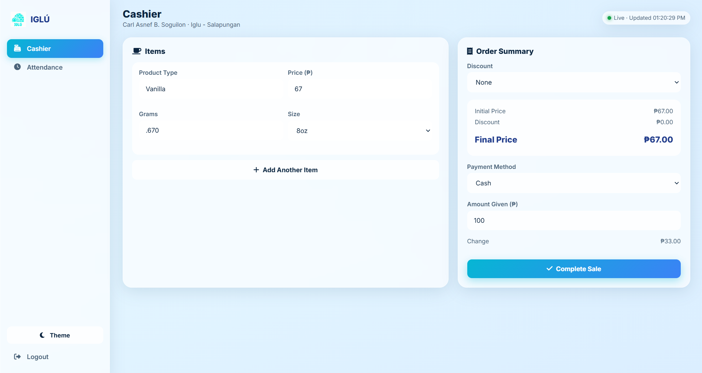
Cashier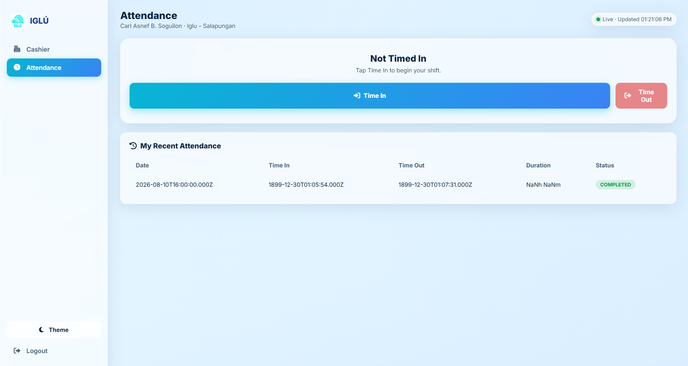
Attendance (Employee)Appendices
Proof of collaboration, communication, and PMIS usage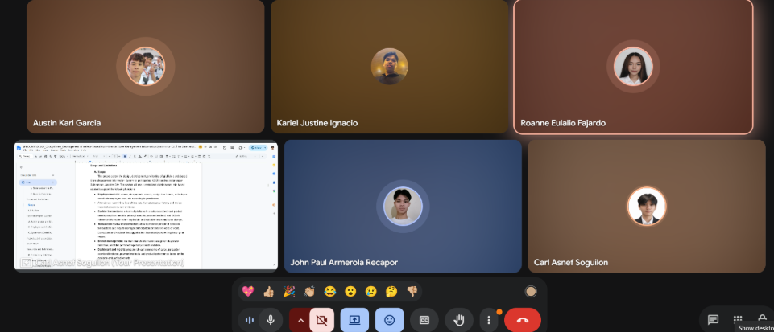
A · Rehearsal Call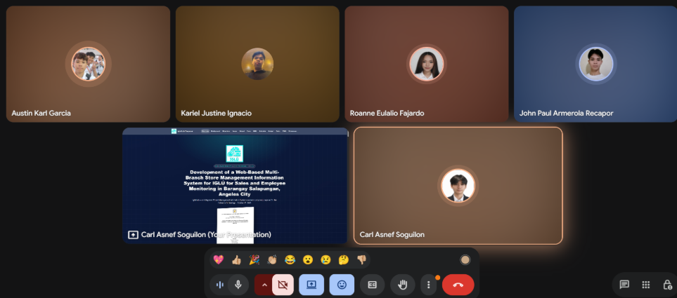
B · Title Presentation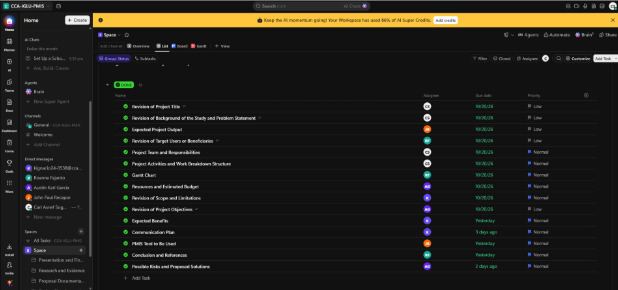
D · ClickUp Task List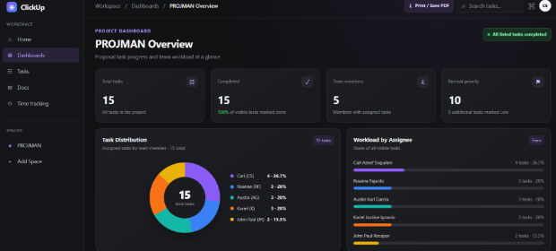
E · ClickUp Dashboard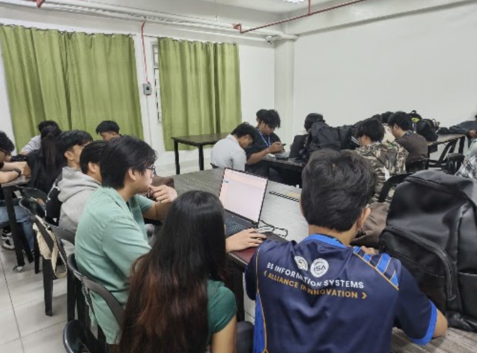
F · Team at WorkThank You
IgluHub — Web-Based Multi-Branch Store Management Information System
Soguilon · Fajardo · Garcia · Ignacio · Recapor